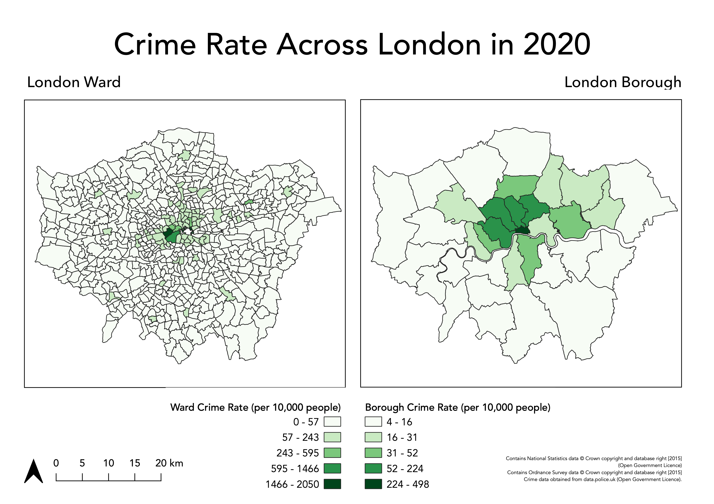

Week 3 Practical Alternate: Using AGOL for Crime Mapping
For this week’s alternate practical, we will continue to use AGOL as our main GIS system to process and analyse our data, similar to the Q-GIS practical.
This week, compared to last, we will however be dealing with two main ‘compromises’ in our use of AGOL vs. Q-GIS that you will need to be aware of!
1. Projections
Within theQ-GIS, as you will see if you read through the main practical (which I highly advised doing), setting Project and Data CRSs are an essential step in successfully analysing and visualisng data correctly. In our case, our practical data uses two CRS - BNG for the administrative boundaries and WGS84 for the crime data. As a result, in the main practical, we use a tool within Q-GIS to reproject our crime data into the same CRS as the administrative boundaries, i.e. BNG.
AGOL, in comparision, uses WGS84/Mercator as default CRS for all its data mapping and visualisation - and can only be altered if you change the basemap to a dataset that is in your desired CRS/PS (although in their Beta version, it appears that there will be more user choice over choosing projections). AGOL will convert our data, such as our Administrative Boundaries (which are in British National Grid) “on the fly” to WGS84 - so we do not need to reproject it. However, this will mean we may forgot this step in the future - for example, when using R-Studio instead; therefore it is important to recognise that this aspect of our GIS workflow is missed in this tutorial
2. Map-making & Visualisation
AGOL also has relatively limited capacity for map-making. As a result, for this practical, I would recommend using a mixture of your output from AGOL alongside either a graphic software or even PowerPoint to make final additions that are needed to your map. You’ll see these recommendations below as my proposed workaround.
Detailed cartography is one of the key advantages that Q-GIS and ArcGIS have over the use of programming tools, such as R-Studio. As you’ll see in future practicals, we can still make excellent maps in R-Studio, it takes a little more time and experience than the “speed” of the traditional GIS software.
With all that being said, we stil have plenty of data analysis to learn - so let’s get started!
Practical Instructions
We now have our datasets download and ready to process - we simply need to get them loaded onto our AGO map.
- Open your ArcGIS Online (AGO) home webpage and click on the Map tab.
- This is the main interface we will use to import and analyse our data and is a light version of a traditional Desktop GUI-GIS.
- Save your map as Crime Analysis in London.
- You can add as many tags as you like – I used: crime | London | analysis.
Let’s go ahead and start adding data to our map.
- Click on the Add button and select Add Layer from File:
Add Ward Population zip Add Borough Shapefile Add Borough Population csv
- In AGO, import the 2011 population
csvfrom yourworkingfolder by using the Add data button as before.- Note for csvs, the population data can be imported as the original file and there is no need to zip it.
- For the csvs, add the layer just as a table.
- To create an Attribute Join in AGO, you need to click on the Perform Analysis button when hovering over the
London_Warddataset and then open the Summarise Data drop-down to find the Join Features tool.
- Click on the Join Features tool and add the appropriate inputs for each step (again make sure you get your target and join layer and their respective fields correct and also select to keep all target features):
Load Ward Population data
Click on Layer –> Add Layer –> Add Vector Layer.
- With File select as your source type, click on the small three dots button and navigate to your
ward_population_2019.shpin yourworkingfolder.- Click on the
.shpfile of this dataset and click Open. - Then click Add.
- You may need to close the box after adding the layer.
- Click on the
Load Borough shape and population data and join!
We now need to create our Borough population shapefile - and to do so, we need to repeat exactly the same process as last week in terms of joining our table data to our shapefile.
We will let you complete this without full instructions as your first “GIS challenge”.
Remember, you need to:
Load the respective Borough dataset as a Vector Layer (found in your
rawdata folder ->boundaries->2011->London_Borough_Excluding_MHW.shp).Load the respective Population dataset as a Delimited Text File Layer (Remember the settings, including no geometry! This one is found in your
workingfolder)Join the two datasets together using the Join tool in the Borough dataset Properties box (remember which fields to use, which to add and to remove the prefix - look back at last week’s instructions if you need help).
Export your joined dataset into a new dataset within your
workingfolder:borough_population_2019.shp.Make sure this dataset is loaded into your Layers / Added to the map.
Remove the original Borough and population data layers.
We now are ready to load and map our crime data.
We will load this data using the Delimited Text File Layer option you would have used just now to load the borough population - but this time, we’ll be adding point coordinates to map our crime data as points.
Click on Layer –> Add Layer –> Add Delimited Text File Layer.
- With File select as your source type, click on the small three dots button and navigate to your
all_theft_2019.shpin yourraw->crimefolders.- Click on the
.csvfile of this dataset and click Open. - In *Record and Fields Options**, ensure it is set to
CSV, untickDecimal separator is commaand tickFirst record has field names,Detect field typesandDiscard empty fields. - In Geometry Definition, select
Point coordinatesand set the X field toLongitudeand the Y field toLatitude. - The Geometry CRS should be:
EPSG:4326 - WGS84, a.k.a. the GCS of lat and lon! - Click Add.
- Click on the
No need to reproject
Counting Points-in-Polygons with AGOL
The next step of our analysis is incrediby simple - as Q-GIS has an in-built tool for us to use.
We will use the Count Points in Polygons in the Analysis toolset for Vector data to count how many crimes have occured in both our Wards and our Boroughs.
We will then have our count statistic which we will need to normalise by our population data to create our crime rate final statistic!
Let’s get going and first start with calculating the crime rate for the borough scale:
- Click on Vector -> Analysis Tools -> Count Points in Polygons.
Making our Crime Rate Maps for analysis in AGOL
- Click on Print –> Map with Legend and either take a screenshot or use the File –> Export as PDF and then trim your PDF to the map.
- Remember to save your final map outputs in your
mapsfolder. - You may want to create a folder for these maps titled
w2.
- Remember to save your final map outputs in your
Adding Map Comopnents
Now we have our two maps ready, we can add our main map elements:
- Title
- Orientation
- Data Source
We won’t at this time add anything else - an inset map could be nice, but this requires additional data that we do not have at the moment.
Any other map elements would also probably make our design look too busy.
- Using the tools on the left-hand tool bar:
- Add a scale bar: use the Item Properties to adjust the Style, number of segments, font etc..
- Add a north arrow: draw a box to generate the arrow and then use the Item Properties to adjust.
- I typically place the two side by side - and you can select both, right-click and group so you can then treat them as a single item when moving them around the page.
- Add a title at the top of the page, and subtitles above the individual maps.
- Finally add a box detailing Data Sources, you can copy and paste the text below:
> Contains National Statistics data © Crown copyright and database right [2015] (Open Government Licence)
Contains Ordnance Survey data © Crown copyright and database right [2015]
Crime data obtained from data.police.uk (Open Government Licence).
Once you have added these properties in, you should have something that looks a little like this:

Export map
We are finally ready to export our map!
- To export your map to a file go: Layout -> Export as Image and then save in your
mapsfolder asLondon_2020_Crime_Rate.png.- You can also export your map as a PDF.
Assignment 1: Submit your final maps and a brief write-up
Your one and only assignment for this week is to submit your maps your relevant seminar folder here.
What I’d like you to do is, on your own computer, create a new Word document and set the orientation to Landscape.
Copy over your map into the first page and ensure it takes up the whole page.
On a second page, write a short answer (less than 100 words) to our original question set at the start of our practical:
Does our perception of crime (and its distribution) in London vary at different scales?
Export this to a PDF and upload to your relevant seminar folder. (Again, no need for names - but you might need to come up with a random code on your PDF name, just in case someone else has the same file name as you!)
And that’s it for this week’s practical!
This has been a long but (hopefully!) informative practical to introduce you to cartography and visualisation in Q-GIS,. It is really important for you to reflect on the many practical, technical and conceptual ideas you’ve come across in this practical and from the lecture material earlier. We’ll delve into some of these in more detail in our discussion on Monday, but it would also be great for you to come to the seminar equipped with questions that might have arisen during this practical.
If you feel you didn’t quite understand everything this week, do not worry too much - Week 5 will serve as a good revision of everything we’ve covered here!
Extension Activity: Mapping Crime Rates using Averages
If you have managed to get through all of this in record time and are still looking for some more work to do - one question I would ask you is: could we visualise our crime rate data in a better way?
At the moment, we are looking at the crime rate as an amount, therefore we use a sequential colour scheme that shows, predominantly, where the crime rate is the highest.
Could we use a different approach - using a diverging colour scheme - that could show us where the crime rate is lower and/or higher than a critical mid-point, such as the average crime rate across the wards or borough?
I think so! But first, you’ll need to calculate these averages and then our individual ward/boroughs (%?) difference from this mean.
This is all possible using the field calculator in Q-GIS, but will require some thinking about the right expression.
See if you can think how to calculate this - and then create your diverging maps.
You can either just export an image of your results (in the main Q-GIS window) or you are welcome to update your current maps to reflect this new approach.
Learning Objectives
You should now hopefully be able to:
- Explain what a Geographic Reference System and a Projected Coordinate System is and their differences.
- Understand the limitations of different PCSs and recognise when to use each for specific anlaysis.
- Know what to include - and what not to include - on a map.
- Know how to represent different types of spatial data on a map.
- Explain what the Modifiable Areal Unit Problem is and why poses issues for spatial analysis.
- Reproject data in Q-GIS.
- Map event data using a ‘best-practice’ approach.
- Produce a map of publishable quality.
Acknowledgements
Acknowledgements are made in appropriate sections, but overall this week, as evident, has utilised the Q-GIS documentation extensively.